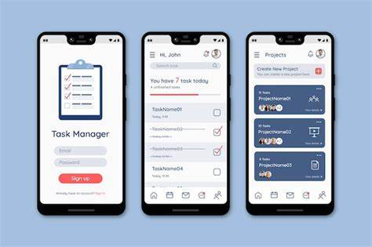

¡Hola! Soy Maricielo y soy una estudiante del Instituto de Educacion Superior Tecnologico Publico Cañete me especializo en la carrera de Arquitectura de Plataformas. A medida que he avanzado en mis estudios, he adquirido conocimientos y habilidades en la programaciòn. Además de mi formación académica, he tenido la oportunidad de trabajar en proyectos emocionantes y desafiantes que me han permitido aplicar mis conocimientos en un entorno práctico. Estos proyectos me han enseñado la importancia del trabajo en equipo, la resolución de problemas y la comunicación efectiva. . Estoy emocionada por la posibilidad de colaborar con otros profesionales y contribuir al avance de esta industria. ¡Gracias por visitar mi portafolio personal y conocer más sobre mí! Aquí puedes conocer más sobre mí y mi enfoque profesional.
Descargar CVFecha de graduación: [2016]
Fecha de graduación: [2021]
Fecha de graduación: [En curso]
Fecha de empleo: [2023]
Puesto: [Practicante]
Manejo en el area de computo
Fecha de empleo: [2022]
Puesto: [Practicante]
En esta posición, brindé apoyo en proyectos de implementación de sistemas para clientes
Fecha de empleo: [2022]
Puesto: [Practicante]
Fui responsable de planificar, implementar y gestionar campañas de marketing en redes sociales para clientes de diversos sectores.
En este proyecto, trabajé en equipo para diseñar y desarrollar un sitio web a medida para una empresa local. Utilizamos HTML, CSS y JavaScript para crear un diseño moderno y funcional que reflejara la identidad de la empresa. Mi contribución incluyó la creación de la estructura del sitio, la implementación de animaciones y la optimización del rendimiento.
En este proyecto, desarrollé una aplicación móvil para ayudar a los usuarios a organizar y gestionar sus tareas diarias. Utilicé el framework React Native para crear una interfaz intuitiva y fácil de usar. La aplicación permitía a los usuarios crear listas de tareas, establecer recordatorios y realizar un seguimiento del progreso. Mi rol principal fue el desarrollo de la interfaz de usuario y la integración de la funcionalidad de notificaciones.
En este proyecto, trabajé en equipo para desarrollar una plataforma de comercio electrónico desde cero. Utilizamos tecnologías como HTML, CSS, JavaScript y PHP para crear una interfaz de usuario atractiva y funcional, un sistema de gestión de productos y un proceso de pago seguro. Mi contribución incluyó el diseño y la implementación de la interfaz de usuario, así como la integración de API de pago.
En este proyecto, creé una aplicación móvil para ayudar a los usuarios a realizar un seguimiento de su actividad física y su progreso en el fitness. Utilicé el framework Flutter para desarrollar la aplicación tanto para iOS como para Android. La aplicación permitía a los usuarios registrar sus entrenamientos, establecer metas de fitness y realizar un seguimiento de su progreso a lo largo del tiempo. Mi rol principal fue el desarrollo de la interfaz de usuario y la integración de la funcionalidad de seguimiento de actividad.
Correo Electrónico: [maricielojimenamezatocasqui@gmail.com]
Numero de celular: 944038001
Ubicación: Las Lomas Mz c Lt 4
Horario de disponibilidad: Las 24 horas